library(tidyverse)Data Visualization Principles
https://rafalab.dfci.harvard.edu/dsbook-part-1/dataviz/dataviz-principles.html
Keywords
Data Visualization
Some Motivaton
- Several of the examples come from here: https://venngage.com/blog/bad-infographics/
Bad example (1)

Bad example (2)

Bad example (3)

Bad example (4)

Bad Example (5)

Bad Example (6)

Bad Example (7)

Data visualization principles
We provide some general principles we can use as a guide for effective data visualization.
Much of this section is based on a talk by Karl Broman titled Creating Effective Figures and Tables and includes some of the figures which were made with code that Karl makes available on his GitHub repository, as well as class notes from Peter Aldhous’ Introduction to Data Visualization course.
Goals of Data visualization
The principles are mostly based on research related to how humans detect patterns and make visual comparisons.
The preferred approaches are those that best fit the way our brains process visual information.
When deciding on a visualization approach, it is also important to keep our goal in mind.
Data visualization principles
We may be comparing a
- Viewable number of quantities.
- Describing distributions for categories or numeric values.
- Comparing the data from two groups.
- Describing the relationship between two variables.
Encoding data using visual cues
Some principles for visualy encoding numerical values:
- aligned lengths
- position
- angles
- area
- brightness
- color hue
Example: Encoding data
browsers <- data.frame(Browser = rep(c("Opera","Safari","Firefox","IE","Chrome"),2),
Year = rep(c(2000, 2015), each = 5),
Percentage = c(3,21,23,28,26, 2,22,21,27,29)) |>
mutate(Browser = reorder(Browser, Percentage)) # reorder by mean of Perc
# reorder(Browswer, Precentage, FUN=mean) # default meanrep(1:3, times = 2) # 1 2 3 1 2 3
rep(1:3, each = 2) # 1 1 2 2 3 3
rep(1:3, each = 2, times = 2) # 1 1 2 2 3 3 1 1 2 2 3 3Example:
- Suppose we want to report the results from two hypothetical polls regarding browser preference taken in 2000 and then 2015.
Pie Chart
A widely used graphical representation of percentages, popularized by Microsoft Excel, is the pie chart:
p1 <- browsers |>
ggplot(aes(x = "", y = Percentage, fill = Browser)) + #x="": dummy single x-category
geom_bar(width = 1, stat = "identity", col = "black") + #identity: actual val. stacked bar graph; col="black": add black outline around slices.
coord_polar(theta = "y") + # mapping y to angles: bar->pie
xlab("") + ylab("") +
theme(axis.text = element_blank(),
axis.ticks = element_blank(),
panel.grid = element_blank()) + #remove backgoround grid
facet_grid(.~Year) # split into two panels
p1
Pie-chart Warning
Here we are representing quantities with both areas and angles, since both the angle and area of each pie slice are proportional to the quantity the slice represents.
This turns out to be a sub-optimal choice since, as demonstrated by perception studies, humans are not good at precisely quantifying angles and are even worse when area is the only available visual cue.
Donut chart
The donut chart uses only area:
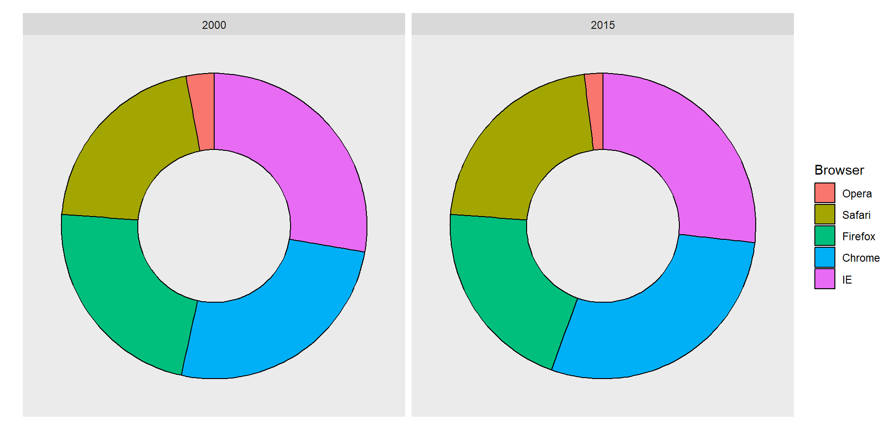
Compare 2000 to 2015
Can you determine the actual percentages and rank the browsers’ popularity?
Can you see how they changed from 2000 to 2015?
library(ggthemes)
p1 <- browsers |> ggplot(aes(x = "", y = Percentage, fill = Browser)) +
geom_bar(width = 1, stat = "identity", col = "black") + coord_polar(theta = "y") +
xlab("") + ylab("") +
theme(axis.text = element_blank(),
axis.ticks = element_blank(),
panel.grid = element_blank()) +
facet_grid(.~Year)
p1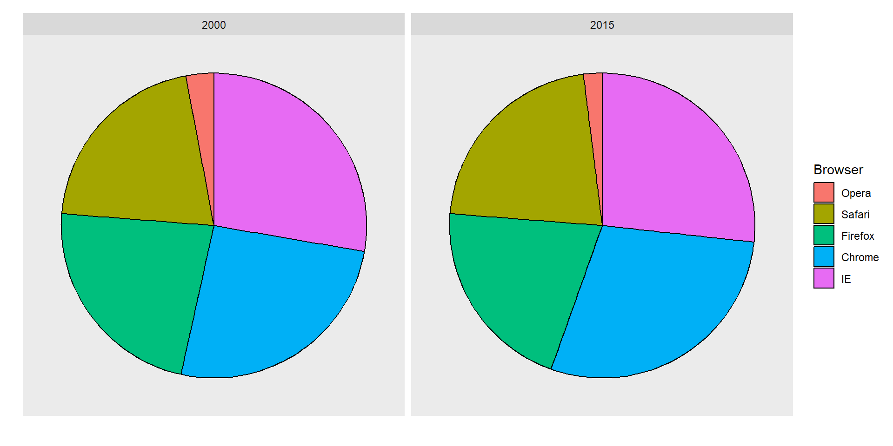
Show the numbers
A better approach is to simply show the numbers.
browsers |>
spread(Year, Percentage) |> #old function: wide->long
#equiv: pivot_wider(names_from = Year, values_from = Percentage)
knitr::kable()| Browser | 2000 | 2015 |
|---|---|---|
| Opera | 3 | 2 |
| Safari | 21 | 22 |
| Firefox | 23 | 21 |
| Chrome | 26 | 29 |
| IE | 28 | 27 |
Barplots
Length is the best visual cue:
library(gridExtra)
p2 <- browsers |>
ggplot(aes(Browser, Percentage)) +
geom_bar(stat = "identity", width = 0.5) +
ylab("Percent using the Browser") +
facet_grid(.~Year)
grid.arrange(p1, p2, nrow = 2)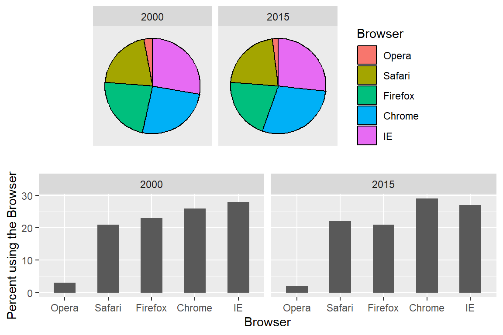
If foreced to make a pie chart
Label each pie slice with its respective percentage:
library(scales)
browsers <- filter(browsers, Year == 2015)
# calculate the label positions
at <- with(browsers, 100 - cumsum(c(0,Percentage[-length(Percentage)])) - 0.5*Percentage)
label <- percent(browsers$Percentage/100) # percent():create percent label
browsers |> ggplot(aes(x = "", y = Percentage, fill = Browser)) +
geom_bar(width = 1, stat = "identity", col = "black") + coord_polar(theta = "y") +
xlab("") + ylab("") + ggtitle("2015") +
theme(axis.text=element_blank(),
axis.ticks = element_blank(),
panel.grid = element_blank()) +
annotate(geom = "text",
x = 1.62, # labels on the same radius, tuned
y = at,
label = label, size=4)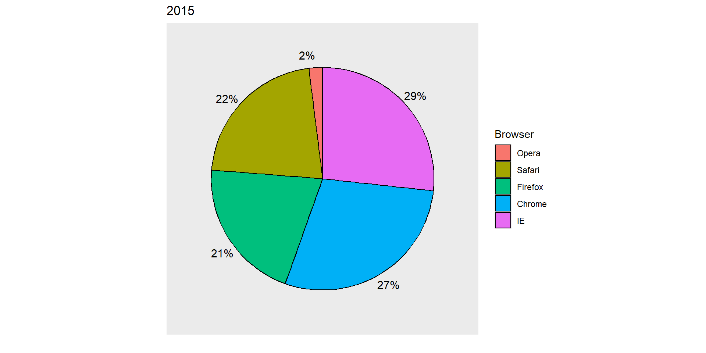
Know when to include 0
When using barplots, it is misinformative not to start the bars at 0.
This is because, by using a barplot, we are implying the length is proportional to the quantities being displayed.
By avoiding 0, relatively small differences can be made to look much bigger than they actually are.
This approach is often used by politicians or media organizations trying to exaggerate a difference.
Know when to include 0 (misleading)
Below is an illustrative example used by Peter Aldhous in this lecture.

(Source: Fox News, via Media Matters.)
Know when to include 0 (correct way)
data.frame(Year = as.character(c(2011, 2012, 2013)),Southwest_Border_Apprehensions = c(165244,170223,192298)) |>
ggplot(aes(Year, Southwest_Border_Apprehensions )) +
geom_bar(stat = "identity", fill = "yellow", col = "black", width = 0.65) 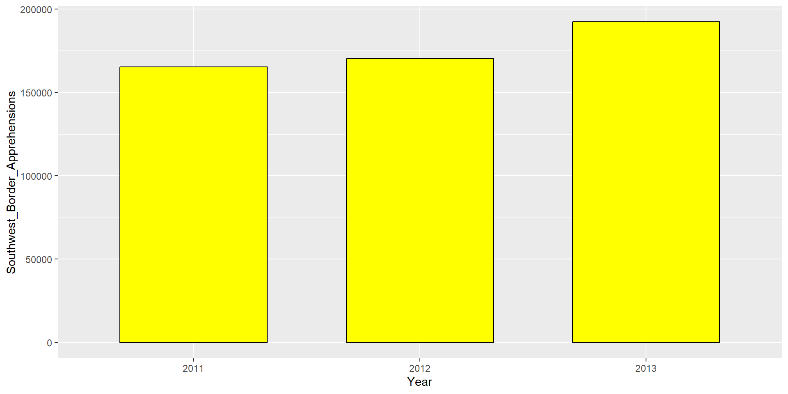
Know when to include 0 (misleading)

(Source: Fox News, via Flowing Data.)
Know when to include 0 (correct way)
data.frame(date = c("Now", "Jan 1, 2013"), tax_rate = c(35, 39.6)) |>
mutate(date = reorder(date, tax_rate)) |>
ggplot(aes(date, tax_rate)) +
ylab("") + xlab("") +
geom_bar(stat = "identity", fill = "yellow", col = "black", width = 0.5) +
ggtitle("Top Tax Rate If Bush Tax Cut Expires")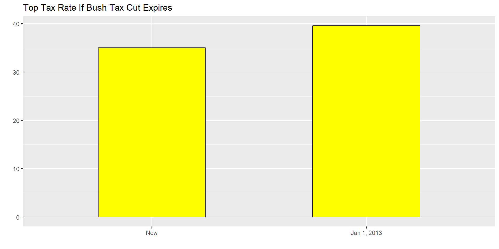
Know when to include 0 (misleading)
One more example:

(Source: Venezolana de Televisión via Pakistan Today and Diego Mariano.)
Know when to include 0 (correct way)
data.frame(Candidate = factor(c("Maduro", "Capriles"), levels = c("Maduro", "Capriles")),
Percent = c(50.66, 49.07)) |>
ggplot(aes(Candidate, Percent, fill = Candidate)) +
geom_bar(stat = "identity", width = 0.65, show.legend = FALSE) 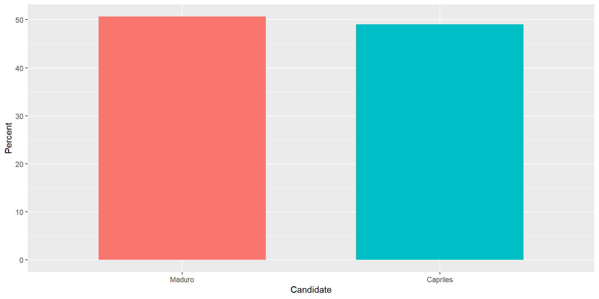
When using postion
When using position rather than length, it is not necessary to include 0.
In particularly when comparing between to within groups variability.
library(dslabs)
p1 <- gapminder |> filter(year == 2012) |>
ggplot(aes(continent, life_expectancy)) +
geom_point()
p2 <- p1 +
scale_y_continuous(limits = c(0, 84))
grid.arrange(p2, p1, ncol = 2)
Do not distort quantities
President Obama used the following chart to compare the US GDP to the GDP of four competing nations:

(Source: The 2011 State of the Union Address)
A bubble chart: Area vs. Radicus
Bubble size (area) ~ input
# up to here
gdp <- c(14.6, 5.7, 5.3, 3.3, 2.5)
gdp_data <- data.frame(Country = rep(c("United States", "China", "Japan", "Germany", "France"),2),
y = factor(rep(c("Radius","Area"),each = 5), levels = c("Radius", "Area")),
GDP = c(gdp^2/min(gdp^2), gdp/min(gdp))) |>
mutate(Country = reorder(Country, GDP)) # reorder Country by GDP using (default) mean GDP
gdp_data |>
ggplot(aes(Country, y, size = GDP)) + #bubble size (bubble area) ~ GDP
geom_point(show.legend = FALSE, color = "blue") +
scale_size(range = c(2,20)) + # sets min/max bubble size
coord_flip() + # switch x- and y-axis
ylab("") + xlab("")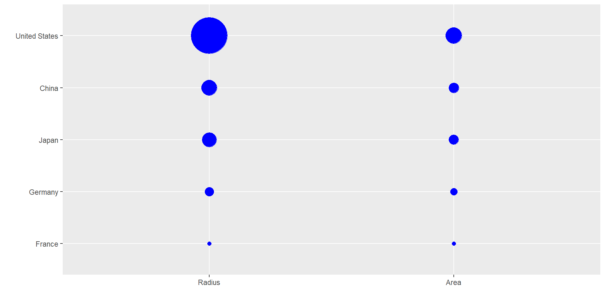
Do not distort quantities
ggplot2 defaults to using area rather than radius.
Of course, in this case, we really should be using length:
data.frame(Country = c("United States", "China", "Japan", "Germany", "France"), GDP = gdp) |>
mutate(Country = reorder(Country, GDP)) |>
ggplot(aes(Country, GDP)) +
geom_col(width = 0.5) + # draws columns (unlike geon_bar() counting rows by default )
ylab("GDP in trillions of US dollars")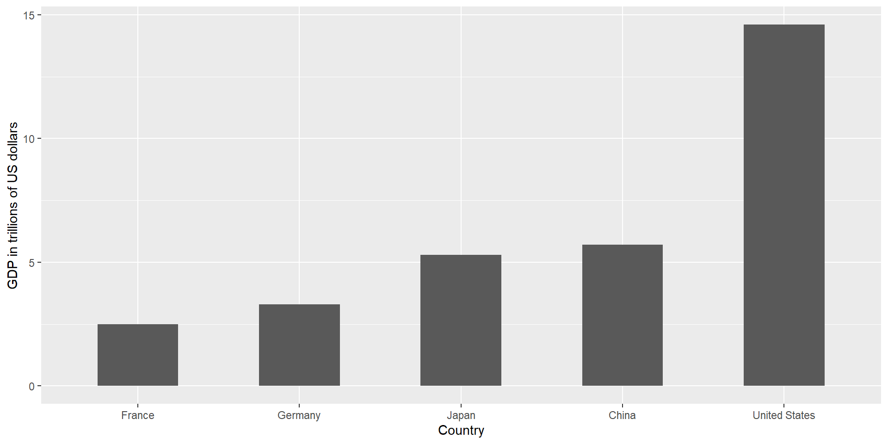
Order categories by a meaningful value
When one of the axes is used to show categories the default ggplot2 behavior is to order the categories alphabetically when they are defined by character strings.
If they are defined by factors, they are ordered by the factor levels.
We rarely want to use alphabetical order.
Instead, we should order by a meaningful quantity.
Order categories by a meaningful value
Note that the plot on the right is more informative:
data(murders)
p1 <- murders |> mutate(murder_rate = total / population * 100000) |>
ggplot(aes(state, murder_rate)) +
geom_bar(stat = "identity") +
coord_flip() +
theme(axis.text.y = element_text(size = 8)) +
xlab("")
p2 <- murders |> mutate(murder_rate = total / population * 100000) |>
mutate(state = reorder(state, murder_rate)) |>
ggplot(aes(state, murder_rate)) +
geom_bar(stat = "identity") +
coord_flip() +
theme(axis.text.y = element_text(size = 8)) +
xlab("")
grid.arrange(p1, p2, ncol = 2)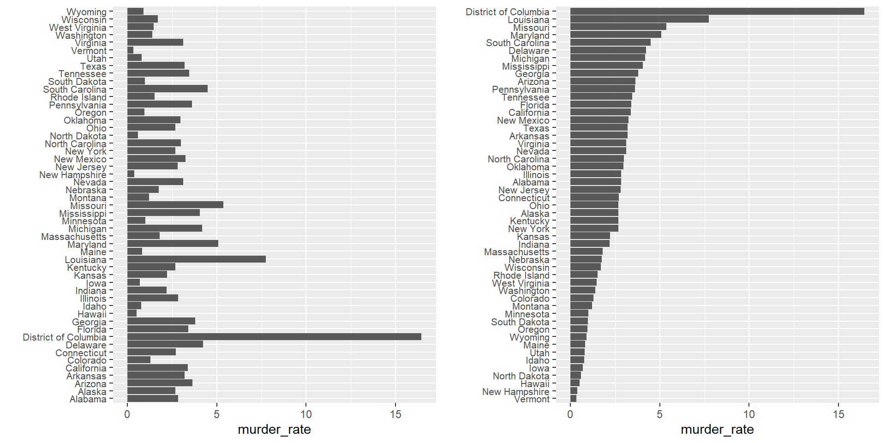
Order categories by a meaningful value
past_year <- 1970
p1 <- gapminder |>
mutate(dollars_per_day = gdp/population/365) |>
filter(year == past_year & !is.na(gdp)) |> #gdp is not missing
ggplot(aes(region, dollars_per_day)) +
geom_boxplot() +
geom_point() +
theme(axis.text.x = element_text(angle = 90, hjust = 1)) +
xlab("")
p2 <- gapminder |>
mutate(dollars_per_day = gdp/population/365) |>
filter(year == past_year & !is.na(gdp)) |>
mutate(region = reorder(region, dollars_per_day, FUN = median)) |>
ggplot(aes(region, dollars_per_day)) +
geom_boxplot() +
geom_point() +
theme(axis.text.x = element_text(angle = 90, hjust = 1)) +
xlab("")
grid.arrange(p1, p2, nrow = 1)
Show the data
We have focused on displaying single quantities across categories. We now shift our attention to displaying data, with a focus on comparing groups.
Suppose we want to describe height data to an extra-terrestrial.
Show the data: barplot
data("heights")
p1 <- heights |>
group_by(sex) |>
summarize(average = mean(height), se=sd(height)/sqrt(n())) |>
ggplot(aes(sex, average)) +
theme_excel() +
geom_bar(stat = "identity", width = 0.5, fill = "blue", color = "black") + #bottom layer
geom_errorbar(aes(ymin = average - 2*se, ymax = average + 2*se), width = 0.25,col="black")+ #top layer
ylab("Height in inches")
p1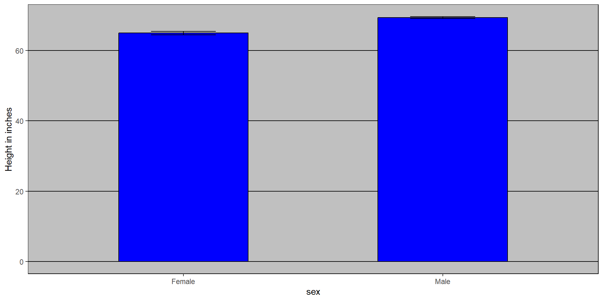
Show the data: Scatter points
heights |>
ggplot(aes(sex, height)) +
geom_point() 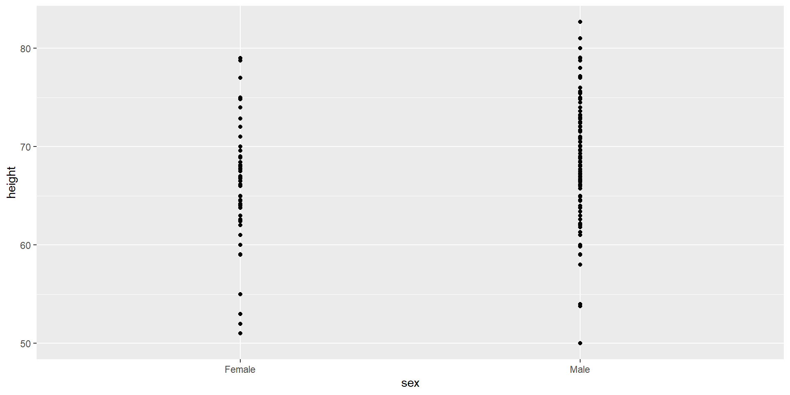
Show the data: jitter
Use jitter to avoid over-plotting (compare to the previous one)
heights |>
ggplot(aes(sex, height)) +
geom_jitter(width = 0.1, alpha = 0.2) 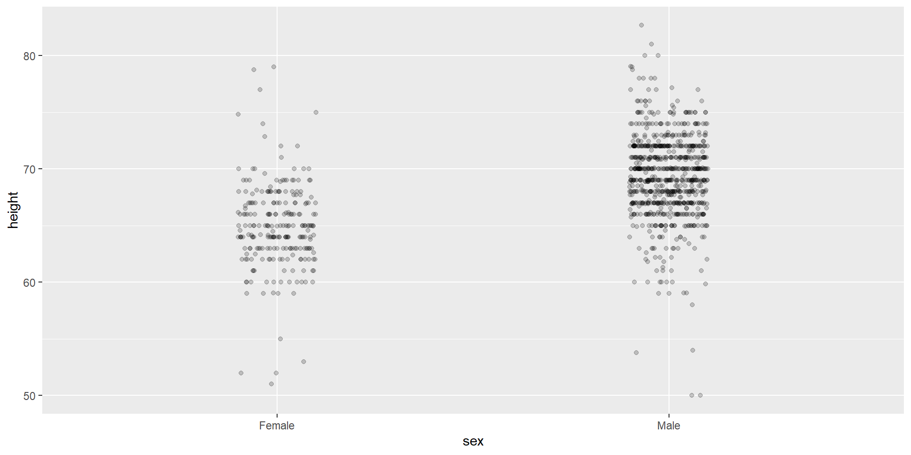
Histograms
Since there are so many points, it is more effective to show distributions rather than individual points. We therefore show histograms for each group:
heights |>
ggplot(aes(height, after_stat(density))) + #computed density using after_stat()
geom_histogram(binwidth = 1, color = "black") +
facet_grid(.~sex, scales = "free_x") # free-x: each facet has its own x-range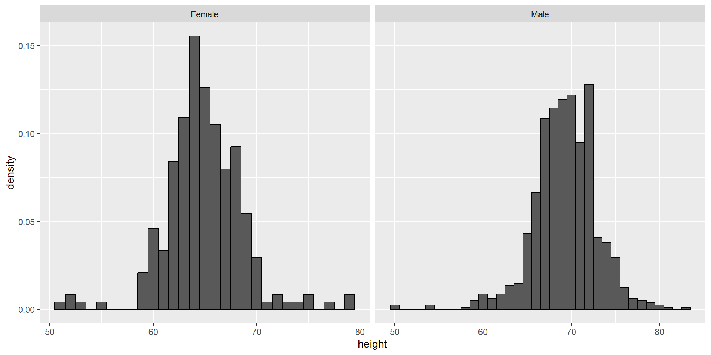
# For fair comparison, remove "free_x"
#facet_grid(rows ~ cols): . means "no faceting" on that sideStack vertically
heights |>
ggplot(aes(height, after_stat(density))) +
geom_histogram(binwidth = 1, color="black") +
facet_wrap(~sex, scales = "free_x", nrow=2)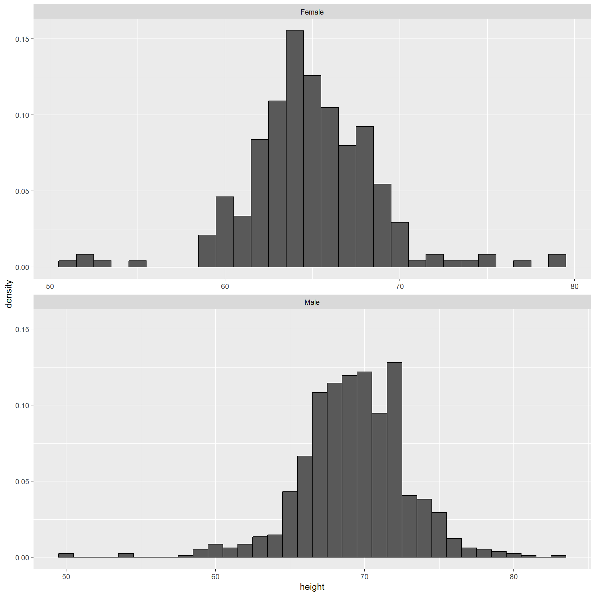
# facet_wrap() has only one faceting dimension, so no . is needed. Same axis
p2 <- heights |>
ggplot(aes(height, after_stat(density))) +
geom_histogram(binwidth = 1, color = "black") +
facet_grid(sex~.)
p2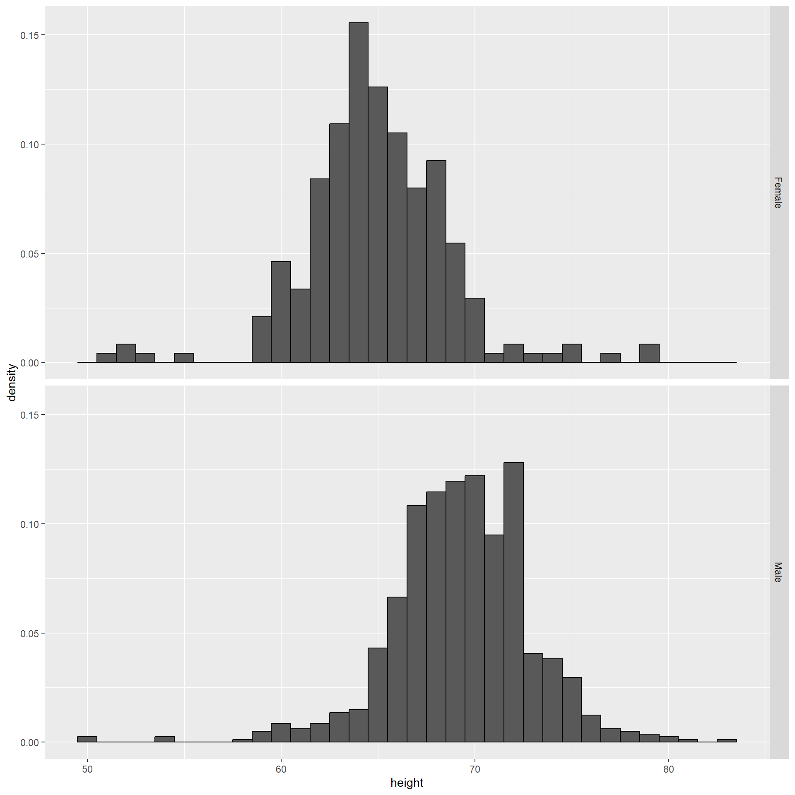
Boxplot is a vertical
Stack horizontally
p3 <- heights |>
ggplot(aes(sex, height)) +
geom_boxplot(coef = 3) + #whisker limits: [Q1-coef*IQR, Q3+coef*IQR]
geom_jitter(width = 0.1, alpha = 0.2) +
ylab("Height in inches")
p3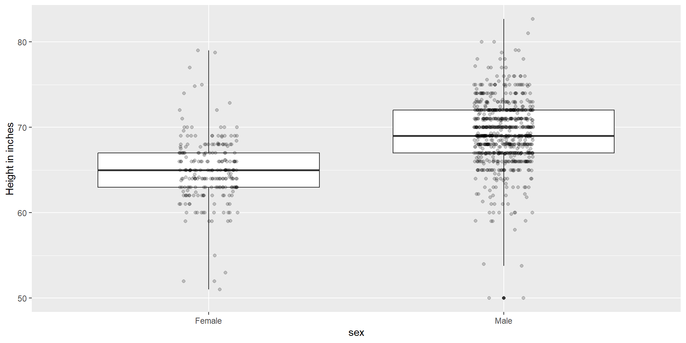
Contrast and compare
grid.arrange(p1, p2, p3, ncol = 3)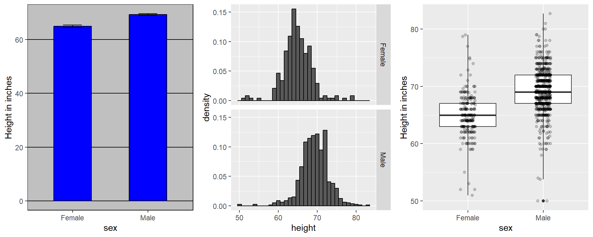
Consider transformations
Here is a terrible plot comparing avg population/country across continents
data(gapminder)
p1 <- gapminder |>
filter(year == 2015) |>
group_by(continent) |>
summarize(population = mean(population)) |> # avg population
mutate(continent = reorder(continent, population)) |>
ggplot(aes(continent, population/10^6)) +
geom_bar(stat = "identity", width=0.5, fill = "blue") +
theme_excel() +
ylab("Population in Millions") +
xlab("Continent")
p1- Conclusion: countries in Asia have much larger populaiton (False)
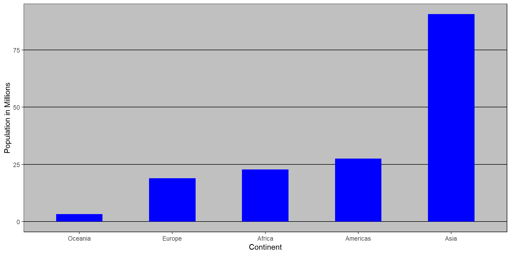
Two countries drive average
p2 <- gapminder |> filter(year == 2015) |>
mutate(continent = reorder(continent, population, median)) |>
ggplot(aes(continent, population/10^6)) +
ylab("Population in Millions") +
xlab("Continent")
p2 + geom_jitter(width = .1, alpha = .5) 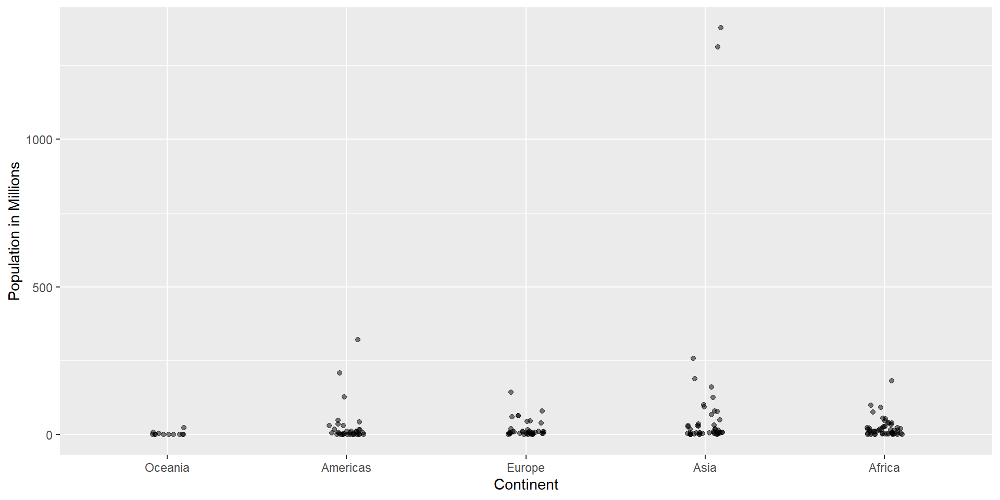
Log Transformations
Here a log transformation provides a much more informative plot:
p2 <- p2 + geom_boxplot(coef = 3) +
geom_jitter(width = .1, alpha = .5) +
scale_y_log10(breaks = c(1,10,100,1000)) + #showing original value but with log10 scale
theme(axis.text.x = element_text(size = 7))
grid.arrange(p1, p2, ncol = 2)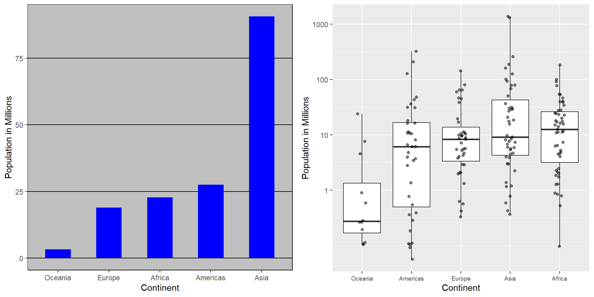
Visual cues to be compared should be adjacent
gapminder |>
filter(year %in% c(1970, 2010) & !is.na(gdp)) |>
mutate(dollars_per_day = gdp/population/365) |>
mutate(labels = paste(year, continent)) |>
ggplot(aes(labels, dollars_per_day)) +
geom_boxplot() +
theme(axis.text.x = element_text(angle = 90, hjust = 1)) +
scale_y_continuous(trans = "log2") +
ylab("Income in dollars per day")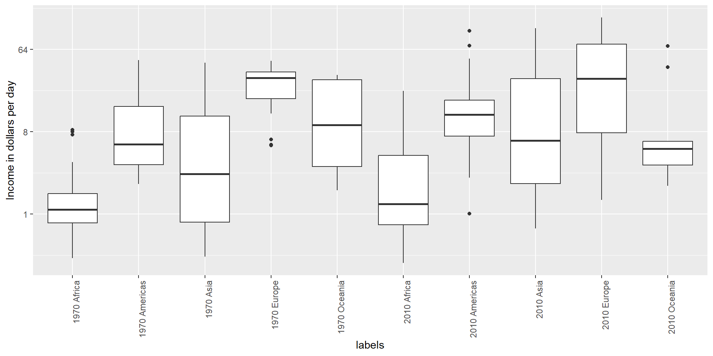
Visual cues to be compared should be adjacent
Much easier if they are adjacent
gapminder |>
filter(year %in% c(1970, 2010) & !is.na(gdp)) |>
mutate(dollars_per_day = gdp/population/365) |>
mutate(labels = paste(continent, year)) |> # note the order change
ggplot(aes(labels, dollars_per_day)) +
geom_boxplot() +
theme(axis.text.x = element_text(angle = 90, hjust = 1)) +
scale_y_continuous(trans = "log2") +
ylab("Income in dollars per day")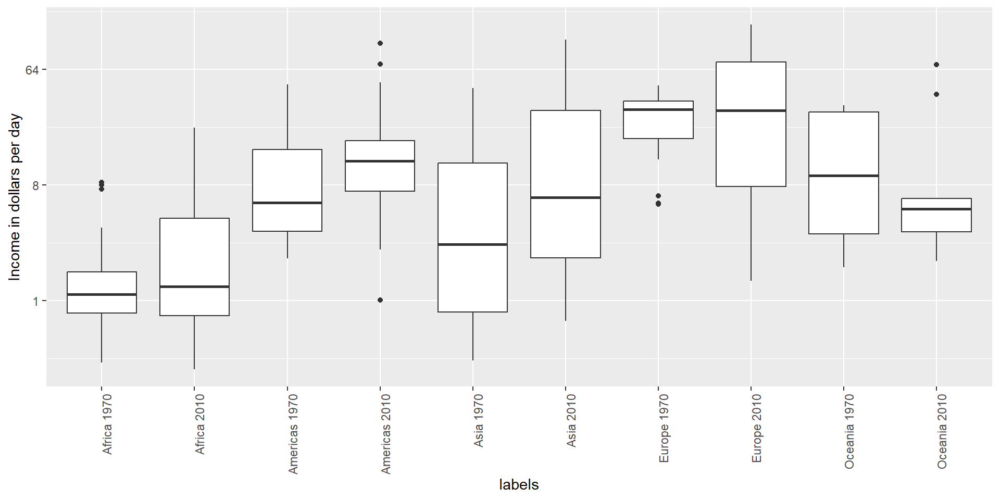
Use color
The comparison becomes even easier to make if we use color to denote the two things we want to compare:
gapminder |>
filter(year %in% c(1970, 2010) & !is.na(gdp)) |>
mutate(dollars_per_day = gdp/population/365, year = factor(year)) |>
ggplot(aes(continent, dollars_per_day, fill = year)) +
geom_boxplot() +
theme(axis.text.x = element_text(angle = 90, hjust = 1)) +
scale_y_continuous(trans = "log2") +
ylab("Income in dollars per day")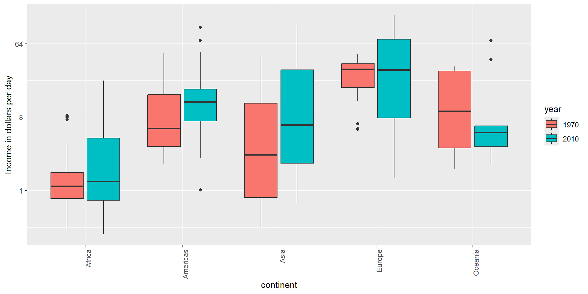
Think of the color blind
Approximately 1 in 12 men (8%) and 1 in 200 women (0.5%) worldwide are color blind.
The most common type of color blindness is red-green color blindness, which affects around 99% of all color blind individuals.
The prevalence of blue-yellow color blindness and total color blindness (achromatopsia) is much lower.
An example of how we can use a color blind friendly palette is described here.
Color-blind-friendly color palette
color_blind_friendly_cols <-
c("#999999", "#E69F00", "#56B4E9", "#009E73",
"#F0E442", "#0072B2", "#D55E00", "#CC79A7")
p1 <- data.frame(x = 1:8, y = rep(1,8), col = as.character(1:8)) |> # treat char as discrete (categorical)
ggplot(aes(x, y, color = col)) +
geom_point(size = 8, show.legend = FALSE) +
theme(axis.title.x = element_blank(),
axis.text.x = element_blank(),
axis.ticks.x = element_blank(),
axis.title.y = element_blank(),
axis.text.y = element_blank(),
axis.ticks.y = element_blank(),
panel.grid.major = element_blank(),
panel.grid.minor = element_blank())
p1 + scale_color_manual(values = color_blind_friendly_cols) #match the colors in orderPlots for two variables
In general, you should use scatterplots to visualize the relationship between two variables.
However, there are some exceptions.
- We describe two alternative plots here:
- slope chart
- Bland-Altman plot
Slope charts
Slope charts adds angle as a visual cue, useful when comparing two groups and each element across two variables, such as years.
west <- c("Western Europe","Northern Europe","Southern Europe",
"Northern America","Australia and New Zealand")
dat <- gapminder |>
filter(year %in% c(2010, 2015) & region %in% west &
!is.na(life_expectancy) & population > 10^7)
dat |>
mutate(location = ifelse(year == 2010, 1, 2), # ifelse(): vectorized
location = ifelse(year == 2015 &
country %in% c("United Kingdom", "Portugal"),
location + 0.22, location),
hjust = ifelse(year == 2010, 1, 0)) |> #hjust=0: left-just; hjust=1: right-justify
mutate(year = as.factor(year)) |>
ggplot(aes(year, life_expectancy, group = country)) + # group ensure one line per country
geom_line(aes(color = country), show.legend = FALSE) +
geom_text(aes(x = location, label = country, hjust = hjust), # label every row (country)
show.legend = FALSE) +
xlab("") + ylab("Life Expectancy")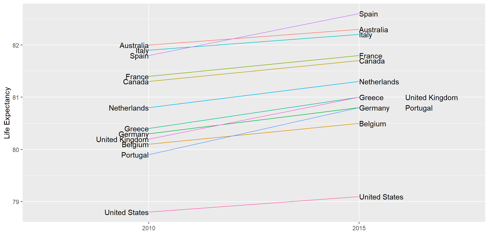
Scatterplot version
library(ggrepel)
west <- c("Western Europe","Northern Europe","Southern Europe",
"Northern America","Australia and New Zealand")
dat <- gapminder |>
filter(year %in% c(2010, 2015) & region %in% west &
!is.na(life_expectancy) & population > 10^7)
dat |>
mutate(year = paste0("life_expectancy_", year)) |> #paste0: no separator
select(country, year, life_expectancy) |>
spread(year, life_expectancy) |> #->wide table: spread(key(col)=year, value): one row per country
ggplot(aes(x=life_expectancy_2010,y=life_expectancy_2015, label = country)) +
geom_point() + geom_text_repel() +
scale_x_continuous(limits = c(78.5, 83)) +
scale_y_continuous(limits = c(78.5, 83)) +
geom_abline(lty = 2) + #geom_abline(slope=1, intercept=0): lty=2: dashed line
xlab("2010") +
ylab("2015")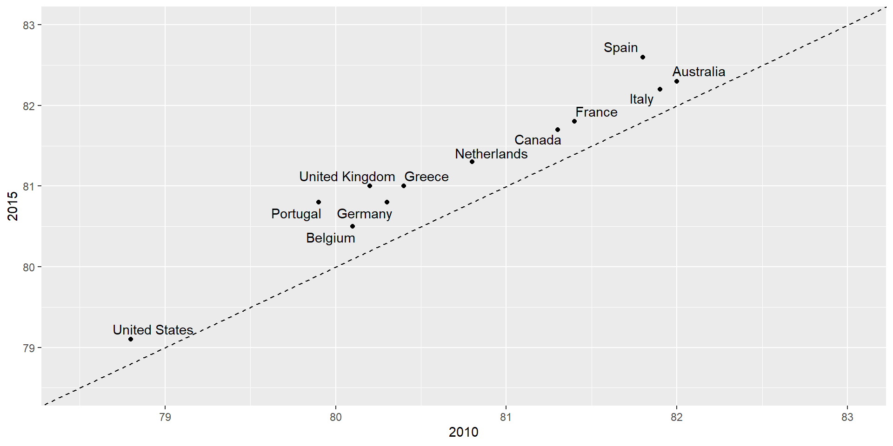
Bland-Altman plot
Shows difference in the y-axis and average on the x-axis.
library(ggrepel)
dat |>
mutate(year = paste0("life_expectancy_", year)) |>
select(country, year, life_expectancy) |>
pivot_wider(names_from = "year", values_from = "life_expectancy") |>
mutate(average = (life_expectancy_2015 + life_expectancy_2010)/2,
difference = life_expectancy_2015 - life_expectancy_2010) |>
ggplot(aes(average, difference, label = country)) +
geom_point() +
geom_text_repel() +
# geom_abline(lty = 2) + # This line will be out of the graphing window
xlab("Average of 2010 and 2015") +
ylab("Difference between 2015 and 2010")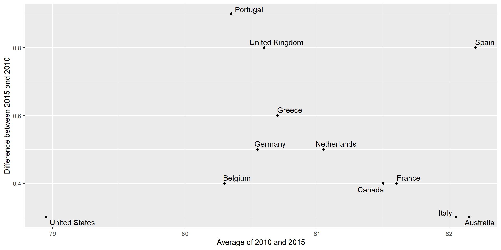
Encoding a third variable
We can use
different colors or shapes for categoris
areas, brightness or hue for continuous values
Encoding a third variable
We encode OPEC membership, region, and population.
present_year <- 2010
dat <- gapminder |>
mutate(region = case_when(
region %in% west ~ "The West",
region %in% "Northern Africa" ~ "Northern Africa",
region %in% c("Eastern Asia", "South-Eastern Asia") ~ "East Asia",
region == "Southern Asia"~ "Southern Asia",
region %in% c("Central America", "South America", "Caribbean") ~ "Latin America",
continent == "Africa" & region != "Northern Africa" ~ "Sub-Saharan Africa",
region %in% c("Melanesia", "Micronesia", "Polynesia") ~ "Pacific Islands"),
dollars_per_day = gdp / population / 365) |>
filter(year %in% present_year & !is.na(gdp) & !is.na(infant_mortality) & !is.na(region) ) |>
mutate(OPEC = ifelse(country %in% opec, "Yes", "No"))
dat |>
ggplot(aes(dollars_per_day, 1 - infant_mortality/1000,
col = region, size = population/10^6,
shape = OPEC)) +
scale_x_continuous(trans = "log2", limits = c(0.25, 150)) +
scale_y_continuous(trans = "logit",limit = c(0.875, .9981),#logit(p)=log(p/(1-p)). It sretch out p when p is close to 0 or 1. (e.g. 0.99 and o.995)
breaks = c(.85,.90,.95,.99,.995,.998)) +
geom_point(alpha = 0.5) +
ylab("Infant survival proportion")
Point shapes available in R
dat <- data.frame(x = c(0:25))
ggplot() +
theme_minimal() +
theme(axis.title.x = element_blank(),
axis.text.x = element_blank(),
axis.ticks.x = element_blank(),
axis.title.y = element_blank(),
axis.text.y = element_blank(),
axis.ticks.y = element_blank(),
panel.grid.major = element_blank(),
panel.grid.minor = element_blank()) +
scale_shape_identity() + # Dont map data values to shapes via a palette. Use the values as-is
scale_y_reverse() + #Flip the y-axis so row 0 appears at the top (like a table)
geom_point(dat, mapping = aes(x%%9, x%/%9, shape = x), size = 4, fill="blue") + # %/%:integer division; fill only affects fillable shape
geom_text(dat, mapping = aes(x%%9, x%/%9+0.25, label = x), size = 4) 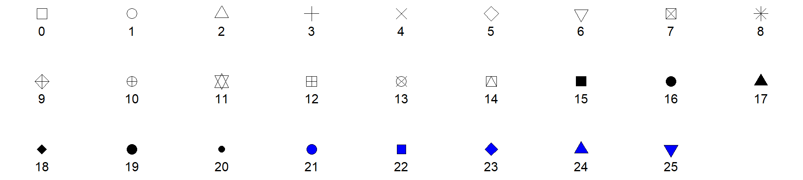
Using intensity or hue
When selecting colors to quantify a numeric variable, we choose between two options: sequential and diverging.
Sequential colors
Sequential colors are suited for data that goes from high to low. High values are clearly distinguished from low values.
library(RColorBrewer)
rafalib::mypar() #load customized function mypar() from rafalib for "nice" plotting parameters
display.brewer.all(type = "seq")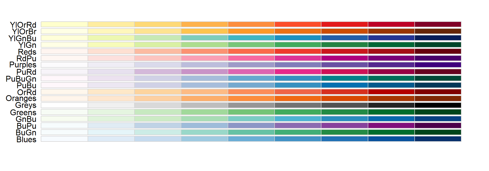
Diverging colors
Diverging colors are used to represent values that diverge from a center. We put equal emphasis on both ends of the data range: higher than the center and lower than the center.
library(RColorBrewer)
rafalib::mypar()
display.brewer.all(type = "div")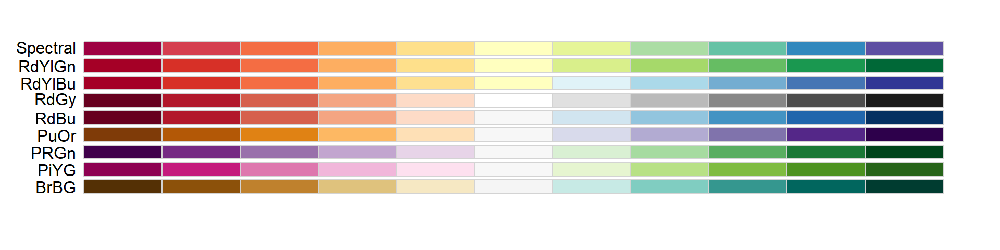
Avoid pseudo-3D plots
The figure below, taken from the scientific literature, shows three variables: dose, drug type and survival:

Avoid pseudo-3D plots
- Humans are not good at seeing in three dimensions and our limitation is even worse with regard to pseudo-three-dimensions.
Avoid pseudo-3D plots
- When does the purple ribbon intersects the red?
Avoid pseudo-3D plots
Color is enough to represent the categorical variable:
##First read data
url <- "https://github.com/kbroman/Talk_Graphs/raw/master/R/fig8dat.csv"
dat <- read.csv(url)
##Now make alternative plot
dat |> gather(drug, survival, -log.dose) |> # gather(data, key, value, ..., -id_cols): keep id_cols (except id_cols) modern: pivot_longer(cols=-log.dose,names_to="drug",values_to="survival")
mutate(drug = gsub("Drug\\.","",drug)) |># gsub(pattern, replacement, x); replace all matches; vs. sub(): replace only the first match
ggplot(aes(log.dose, survival, color = drug)) +
geom_line() 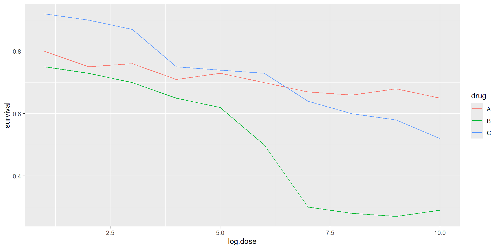
Avoid pseudo-3D plots
Pseudo-3D is sometimes used completely gratuitously: plots are made to look 3D even when the 3rd dimension does not represent a quantity. This only adds confusion and makes it harder to relay your message. We show two examples:
Avoid pseudo-3D plots


(Images courtesy of Karl Broman)
Avoid unecessary decimals
- The default behavior in R is to show 7 significant digits.
data(us_contagious_diseases)
tmp <- 3
options(digits = 7)
dat <- us_contagious_diseases |>
filter(year %in% seq(1940, 1980, 10) & state == "California" &
disease %in% c("Measles", "Pertussis", "Polio")) |>
mutate(rate = count / population * 10000) |>
mutate(state = reorder(state, rate)) |>
select(state, year, disease, rate) |>
spread(disease, rate) # long->wide
knitr::kable(dat) | state | year | Measles | Pertussis | Polio |
|---|---|---|---|---|
| California | 1940 | 37.8826320 | 18.3397861 | 0.8266512 |
| California | 1950 | 13.9124205 | 4.7467350 | 1.9742639 |
| California | 1960 | 14.1386471 | NA | 0.2640419 |
| California | 1970 | 0.9767889 | NA | NA |
| California | 1980 | 0.3743467 | 0.0515466 | NA |
Ways to change displayed digits
signif,rounddefine the number of significant digits globally:
options(digits = 3).
round(3.145, 2) # 3.14 (ties can be surprising; see note below)[1] 3.14round(1234, -2) # 1200 #-2: rounds to hundreds; -1: to tens[1] 1200x <- 0.012345
round(x, 2) # 0.01 (2 digits after decimal)[1] 0.01signif(x, 2) # 0.012 (2 significant digits)[1] 0.012Use options
options(digits = tmp)
knitr::kable(dat) | state | year | Measles | Pertussis | Polio |
|---|---|---|---|---|
| California | 1940 | 37.883 | 18.340 | 0.827 |
| California | 1950 | 13.912 | 4.747 | 1.974 |
| California | 1960 | 14.139 | NA | 0.264 |
| California | 1970 | 0.977 | NA | NA |
| California | 1980 | 0.374 | 0.052 | NA |
More examples on rounding
dat0 <- dat |>
mutate_at(c("Measles", "Pertussis", "Polio"), ~round(., digits=1))
knitr::kable(dat0) mutate_at(cols, fun): apply a function to selected cols~round(.,digits=1):~starts a anonymous function;.: the current col values.
| state | year | Measles | Pertussis | Polio |
|---|---|---|---|---|
| California | 1940 | 37.9 | 18.3 | 0.8 |
| California | 1950 | 13.9 | 4.7 | 2.0 |
| California | 1960 | 14.1 | NA | 0.3 |
| California | 1970 | 1.0 | NA | NA |
| California | 1980 | 0.4 | 0.1 | NA |
Compare Values in columns
dat <- us_contagious_diseases |>
filter(year %in% seq(1940, 1980, 10) & state == "California" &
disease %in% c("Measles", "Pertussis", "Polio")) |>
mutate(rate = count / population * 10000) |>
mutate(state = reorder(state, rate)) |>
select(state, year, disease, rate) |>
spread(year, rate) |>
mutate(across(where(is.numeric), round, digits = 1))
knitr::kable(dat)| state | disease | 1940 | 1950 | 1960 | 1970 | 1980 |
|---|---|---|---|---|---|---|
| California | Measles | 37.9 | 13.9 | 14.1 | 1 | 0.4 |
| California | Pertussis | 18.3 | 4.7 | NA | NA | 0.1 |
| California | Polio | 0.8 | 2.0 | 0.3 | NA | NA |
Values compared in columns
Place values being compared on columns rather than rows.
| state | year | Measles | Pertussis | Polio |
|---|---|---|---|---|
| California | 1940 | 37.9 | 18.3 | 0.8 |
| California | 1950 | 13.9 | 4.7 | 2.0 |
| California | 1960 | 14.1 | NA | 0.3 |
| California | 1970 | 1.0 | NA | NA |
| California | 1980 | 0.4 | 0.1 | NA |
Know your audience
Graphs can be used for
our own exploratory data analysis,
to convey a message to experts, or
to help tell a story to a general audience.
Make sure that the intended audience understands each element of the plot.